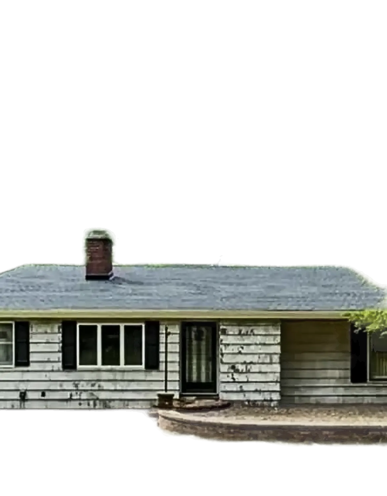
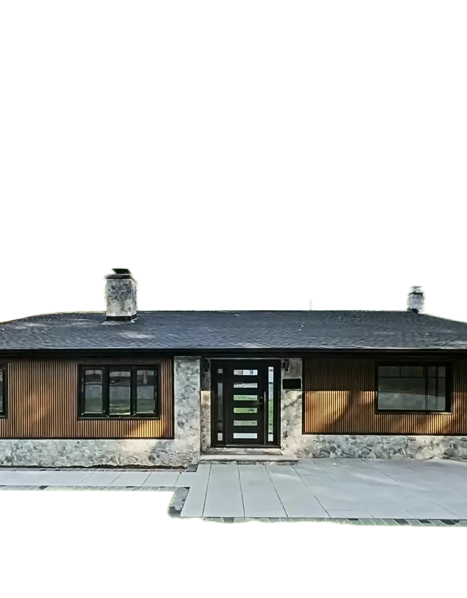

Real houses. Real renovations.
 The room
The room The bathroom
The bathroom The basement
The basement The kitchen
The kitchenSell Your House As-Is in North Jersey.
Cash home buyers · North Jersey
No repairs. No clean-out. No listing required.
or call (862) 328-5179
Inherited · Repairs · Landlords · Relocating · Quick sale
People sell for all kinds of reasons.
A nice house or a project, it works the same way.
I'm Luca.
Who's buying
I'm Luca. I buy houses across North Jersey. If you have a house you need to sell, whatever the reason, you'll talk to me.
Not a call center. Not a middleman.
We buy houses as-is.
No repairs. No clean-out. No hassle.
Don't fix it.
Roof, siding, foundation. You don't spend a dollar on repairs. We buy the house the way it stands today.
On our dime.
All of this happens after we buy the house, on our dime, not yours.
Don't clean it out.
Leave the furniture, the boxes, the bags, whatever is in the attic and the basement. Take what matters to you and close the door. The rest is our job.
No agents. No showings.
No agent commission when selling directly, no strangers walking through your house, no home inspection to pass. Just a cash offer, straight from the people buying the house.
How it works
Three steps. That's it.
Tell us about the house
Send us the address and when you'd like to sell.
Get a cash offer
Free, with no obligation. If the number works for you, we move forward.
Close when you're ready
Fast if you need it, later if you need time. We set the date around you.
You walk away with cash.
What you save money on: realtor fees, transfer tax, lawyer fees, title fees. We pay it all.
Get My Cash OfferAnything already owed on the house, like a mortgage or back taxes, gets paid off at closing, as in any sale.
Any condition
Does your house look like this?
Then let's talk. And if it doesn't, let's talk anyway.

Who we help
Not just the tough houses.
People sell for all kinds of reasons. Nice house or a project, it works the same way.
You inherited a house
It's full, it's far away, or you just don't want to deal with it. Take what matters and leave the rest.
It needs repairs
Roof, kitchen, foundation, years of wear. You don't fix a thing.
You're done being a landlord
Tired of the repairs and the phone calls? Sell the rental and move on.
You're relocating
New job, new city. We set the closing around your move.
The bank is involved
Talk to us early. We'll tell you straight what we can do.
You want a quick sale
Nothing wrong with the house. You just want it done, without listing it.
Whatever the reason, we buy.
Before & after
Then we bring them back.
The rainy house in the animation is AI. These are real houses from our own projects, photographed before and after. Keep scrolling or drag the line.

 BeforeAfter
BeforeAfter
 BeforeAfter
BeforeAfter
 BeforeAfter
BeforeAfter
BeforeAfter
BeforeAfter
 BeforeAfter
BeforeAfter
We renovate with our team: demolition, electrical, plumbing, HVAC, windows, floors, kitchens, bathrooms. That's why the condition of your house doesn't scare us.
Questions
Straight answers.
Do I have to clean out the house first?
No. Leave anything you don't want to keep: furniture, boxes, trash, the stuff in the attic. Take what matters to you and we'll take care of the rest.
Do I need to make any repairs?
No. We buy the house as-is. Old kitchen, leaky roof, foundation issues: you don't fix anything.
My house is in good shape. Can I still sell to you?
Yes. Plenty of people just want a quick sale without listing the house. Send us the address and we'll make you an offer.
Are there fees or commissions?
No agent, so no commission. We pay the transfer tax, lawyer fees and title fees. The only thing that comes out of the price is anything already owed on the house, like a mortgage or back taxes.
Will there be showings or inspections?
No showings, and no home inspection to pass. New Jersey requires a smoke and carbon monoxide alarm check before a house is sold, and your town handles it. We'll tell you up front what yours needs and how we'll handle it.
How fast can we close?
On your timeline. We can make it happen fast if you're in a hurry, or take our time if you need to sort things out first. The one thing that can slow us down is legal paperwork, like a lien or estate papers on an inherited house.
Is the offer free?
Yes. The cash offer is free and you're under no obligation to accept it.
How do you come up with your offer?
We look at what the house needs and what it could sell for once it's fixed up, then give you one straight number. It'll be less than a finished house sells for, because we take on the repairs, the clean-out and the risk. If it doesn't work for you, no hard feelings.
How do I get paid?
At closing, through a title company or attorney, by wire or certified check.
The estate paperwork isn't finished. Can I still reach out?
Yes. Reach out first and we'll work out the timing.
Where do you buy?
New Jersey, mostly North Jersey. Send us the address and we'll let you know.
What does Luca say in the video?
“Are you on the market to sell your home, but you're worried about repairs, cleaning out, showings, realtors, paying commission and all that? No, no, no. Let's not do that. Let's connect with each other. I can pay you cash, worry free. You don't have to go through inspections, and then we can make it happen fast. Cash, as-is offers. Shoot me a text or DM me.”

You'll talk to Luca.


Close the door. I'll turn the lights back on.
Tell us about the house. We'll take it from there.
or call (862) 328-5179